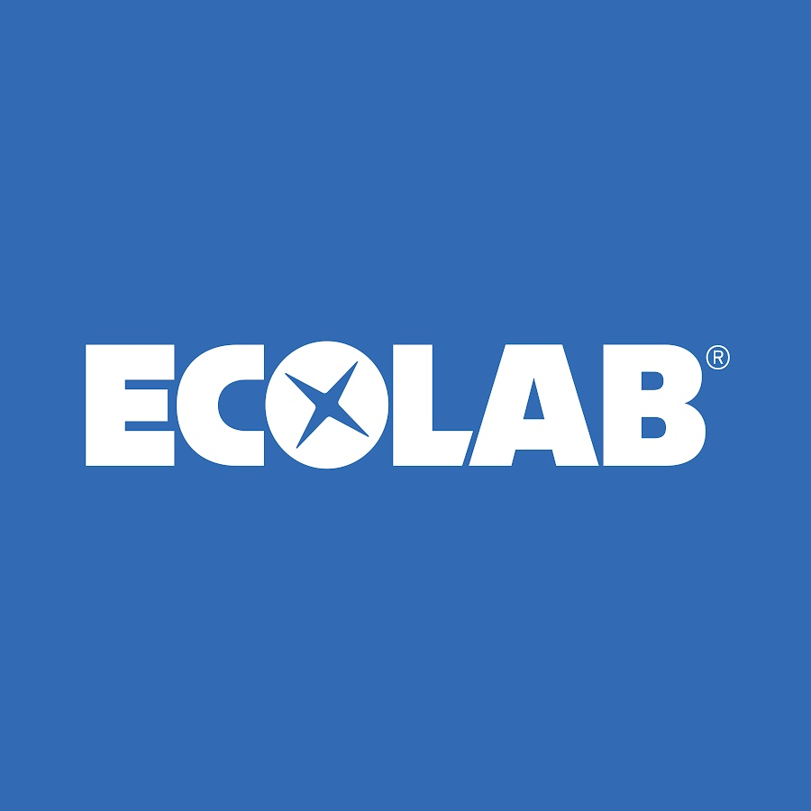
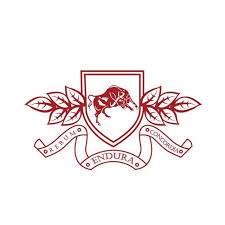

Company Profile
PT SURYA TEKNIK KURNIA BAROKAH
Sejarah Singkat
Berdiri sejak 2014 dengan nama CV Surya Teknik, dan pada tahun 2018 berganti nama menjadi PT Surya Teknik Kurnia Barokah. Tim kami telah menangani berbagai proyek fabrikasi, machining, piping, instalasi, dan maintenance untuk sektor makanan, water & chemical, dan manufaktur umum.
| 2014 | Pendirian & workshop awal |
| 2018 | Perluasan layanan machining, fabrikasi, skid, piping, instalasi & maintenance |
| 2023 | Peningkatan sistem QC & Dokumentasi |
Visi
Menjadi mitra yang terpercaya di Indonesia dengan kinerja unggul dan orientasi keselamatan.
Misi
- Menjaga komitmen dengan mengutamakan Keselamatan, Kualitas, dan Pelayanan yang optimal kepada Customer.
- Membangun budaya K3 dan perbaikan berkelanjutan.
- Memberdayakan SDM tersertifikasi & adaptif.
Ruang Lingkup Pekerjaan
Modular Piping Skid
Skid & Spool pipa
Fabrication Conveyor Frame
Struktur & Frame Conveyor.
Machining
Pembuatan / Repair komponen mesin & sparepart umum
Overhaul
Maintenance & Balancing.
On-site Installation
Instalasi Piping, Skid, Electrical & Komisioning.
Man Power
Preventive Maintenance & Forklift
Mitra kami


